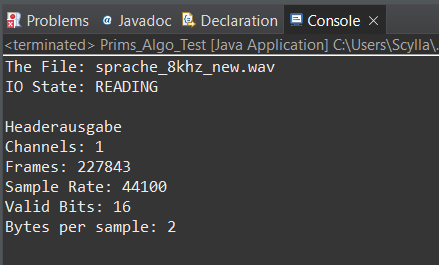
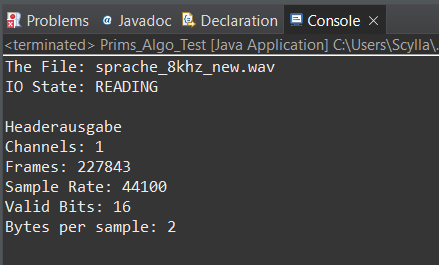
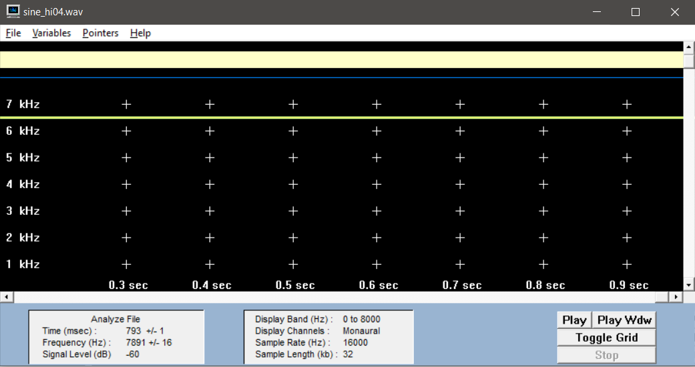
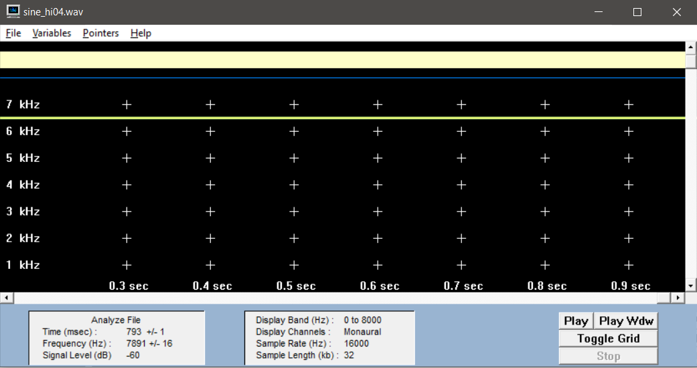

Übung 1
Aufgabe 1 - a)
Aufgabe 1 - b)
Aufgrund des Abtasttheorems von Shannon. Es gilt: fa > 2 * fmax
Aufgabe 1 - c)
 

Aufgabe 1 - d)
Die Bitrate ergibt sich aus Abtastfrequent * Auflösung * Kanal
Bitrate musik: 1.411.200bit/s
Bitrate sprache: 352.800 bit/s
Aufgabe 2 - a & b)
Für sine_lo01:


Für sine_hi04:
 

Aufgabe 2 - c)
Die Abtastfrequenz F muss mehr als das Doppelte der höchsten im Signal enthaltenen Frequenz betragen. Dies führt sonst zu groben Verzerrungen, die die Signalanteile beeinflussen. Es gilt f(a) > 2 · f(max).
Aufgabe 2 - d)
Bei herkömmlichen Soundkarten wird das Signal durch einen Tiefpassfilter bearbeitet, sodass in der Regel alle Frequenzen > f(max)/2 abgetrennt werden.
Aufgabe 2 - e)
Für sine_lo01:
Für sine_hi04:
Code:
for (int i = 0; i < samples / 2; i++) {
readWavFile.sound[i] = readWavFile.sound[i * 2];
}
sampleRate /= 2;
samples /= 2;
Aufgabe 2 - f)
Für sine_lo01:

Für sine_hi04:

Aufgabe 2 - g)
Die Stimme der Sprachdatei hört sich viel tiefer und leicht verzerrt an. Dies kommt zustande weil die hohen Frequenzen herunter gesampelt wurden und nun nur noch die tiefe Audiospur vorhanden ist.
Aufgabe 3 - a)
8 Bit-Auflösung: -128 bis +127
16 Bit-Auflösung: -32768 bis 32767
Aufgabe 3 - b)
Code:
for(i = 0; i < samples; i++){
readWavFile.sound[i] /= Math.pow(2, n);
readWavFile.sound[i] *= Math.pow(2, n);
}
Aufgabe 3 - c)
Für das entstehende Quantisierungsgeräusch ist ein starkes Rauschen signifikant. Mit zunehmender Bitreduzierung überlagert dieses das eigentliche Signal. Dadurch gehen wichtige Informationen verloren. Bei der Sprachdatei ist die Qualität bei einer Reduzierung um 128 Bit noch gut. Ab 256 Bit jedoch hört man bereits ein Rauschen im Hintergrund. Ab 1024 Bit ist das Rauschen schon als störend zu empfinden und es beginnt das Sprachsignal zu überlagern. In der Musikdatei kann man ein Rauschen ab 512 Bit Reduzierung bemerken. Bei einer Bitreduzierung von 2048 Bit wird es unangenehm und ab 8192 Bit kann man spätestens nicht mehr von Musik sprechen.
(Reduzierung bei der Wav Files um 10 bit)
Aufgabe 3 - d)
Das Quantisierungsgeräusch tritt nur auf, wenn das Signal Informationen (Sprache/Musik) enthält. Je höher die Reduzierung, desto stärker ist das Quantisierungsgeräusch.
Aufgabe 3 - e)
Code:
for(i = 0; i < samples; i++) {
new_sound [i] = sound[i];
sound[i] /= pow(2, n);
sound[i]= pow(2, n);
sound[i] -= new_sound[i];
sound[i] *= pow(2, 16-n-1);
}
Aufgabe 3 - f)
Bei einer Reduktion um 1 bit ist das Differenzsignal ein intensives Rauschen. Bei zunehmender Bitreduktion wird das Differenzsignal dem Originalsignal ähnlicher.